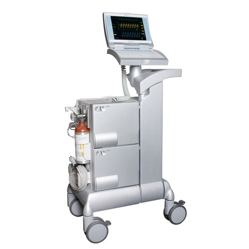

Cardiology Devices
Echocardiogram

Heart-Lung Bypass Machines
Defibrillator
Vascular ultrasound machine

Intra aortic balloon pump machine
Infusion pump
C-Arm fluoroscopy machine

Echocardiogram can help diagnose and monitor certain heart conditions by checking the structure of the heart and surrounding blood vessels, analyzing how blood flows through them, and assessing the pumping chambers of the heart.
The heart-lung machine is also called a cardiopulmonary bypass machine. It takes over for the heart by replacing the heart's pumping action and by adding oxygen to the blood. This means that the heart will be still for the operation, which is necessary when the heart has to be opened (open heart surgery).
A defibrillator is a device that gives a high energy electric shock to the heart of someone who is in cardiac arrest. This high energy shock is called defibrillation, and it's an essential part in trying to save the life of someone who's in cardiac arrest.
A vascular ultrasound system is used to help diagnose a wide variety of diseases and health concerns, including identifying blockages in the arteries, finding blood clots in the limbs, detecting aneurysms, and analyzing the potential harm of varicose veins.
An Intra-aortic balloon pump (IABP) is a type of therapeutic device. It helps your heart pump more blood. You may need it if your heart is unable to pump enough blood for your body. The IABP consists of a thin, flexible tube called a catheter.
Infusion pumps may be capable of delivering fluids in large or small amounts, and may be used to deliver nutrients or medications – such as insulin or other hormones, antibiotics, chemotherapy drugs, and pain relievers.
A C-arm provides high-resolution, real-time fluoroscopic x-ray imaging during surgical, orthopedic, and emergency care procedures. C-arm design consists of an x-ray source and an x-ray detector, with the characteristic C-shaped arm used to connect the two elements while allowing access to a variety of positioning capabilities. DRE offers factory new and professionally refurbished C-arms, ideal for use in any imaging suite.
Vascular ultrasound provides pictures of the body's veins and arteries. Doppler ultrasound is a special ultrasound technique that evaluates blood flow through a blood vessel, including the body's major arteries and veins in the abdomen, arms, legs and neck.